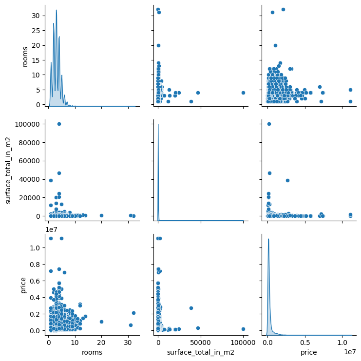

Abstract
Using 14,200 cleaned Buenos Aires property listings, I compared three Bayesian price regressions with different treatments of unusual observations. A mixture model that distinguishes inliers from outliers ranked best in the saved predictive comparison, although influential observations triggered diagnostic warnings. Rooms and floor area alone left substantial price variation unexplained.
The modeling question
An expensive property can reflect a different market segment, an unusual observation or a poorly specified model. I held the predictors constant—rooms and total surface area—and changed the likelihood: Normal errors, Student-t errors and an inlier/outlier mixture.

| Specification | Treatment of unusual observations | Result |
|---|---|---|
| Normal | One residual scale | Baseline fit |
| Student-t | Heavy-tailed errors | No improvement in the reported comparison |
| Mixture | Separate inlier/outlier variation | Best reported ranking; influential-point warnings |
Source: original project materials linked below.
What changed with the likelihood
The mixture specification ranked ahead of the other models in the report’s PSIS-LOO comparison. Student-t errors did not improve on the Normal specification. This is a conditional ranking: influential observations made the mixture’s leave-one-out estimates unstable, so the diagnostic warning belongs alongside the apparent improvement.
What I would improve next
Neighborhood and property type are plausible missing predictors. Adding them would help distinguish genuinely unusual properties from systematic differences between submarkets. The current analysis evaluates modeling choices; it is not a validated appraisal tool.
Explore the work
The original materials retain the calculations, assumptions, and supporting discussion behind this overview.
The readable analysis preserves existing notebook content with code and long output collapsed. Models were not rerun for this presentation; interpretation notes appear at the top of each preview.